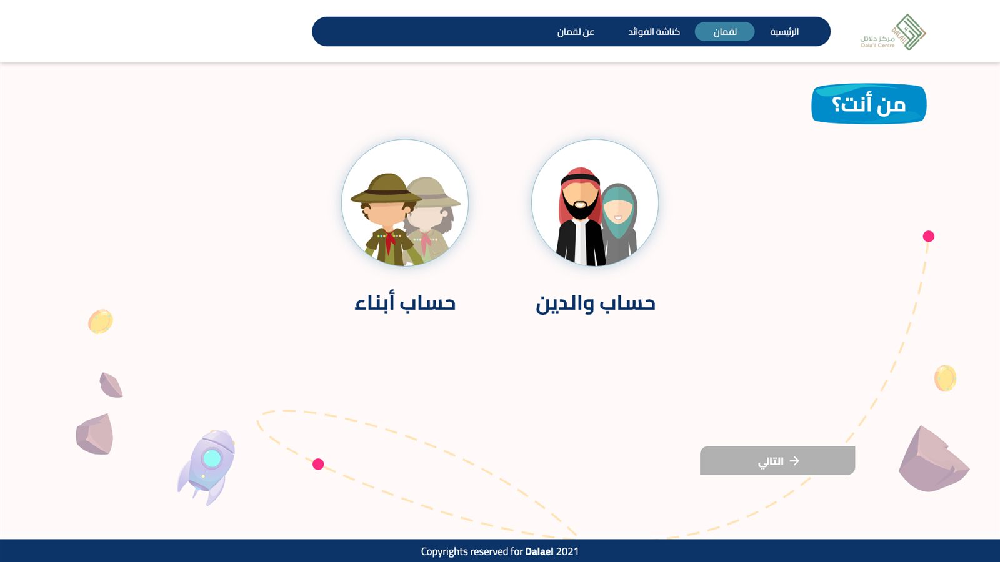
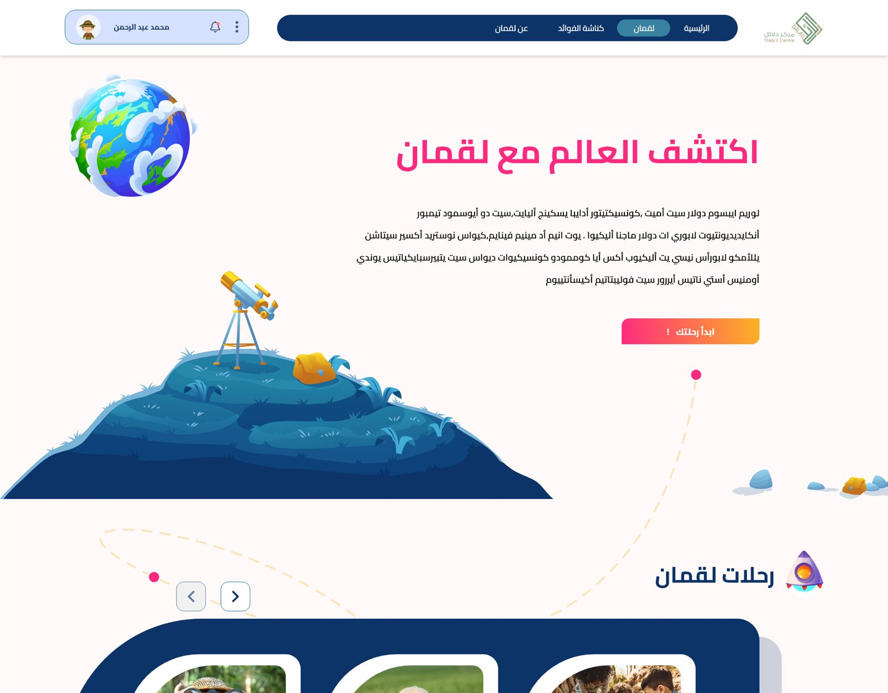
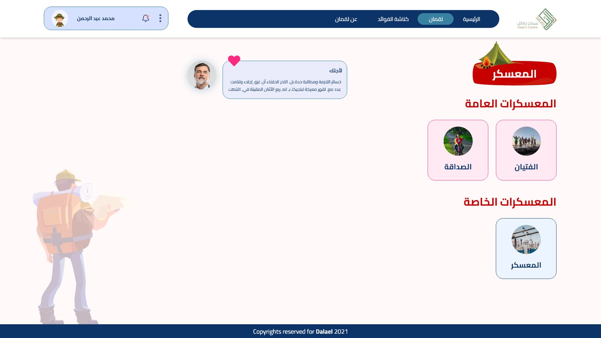
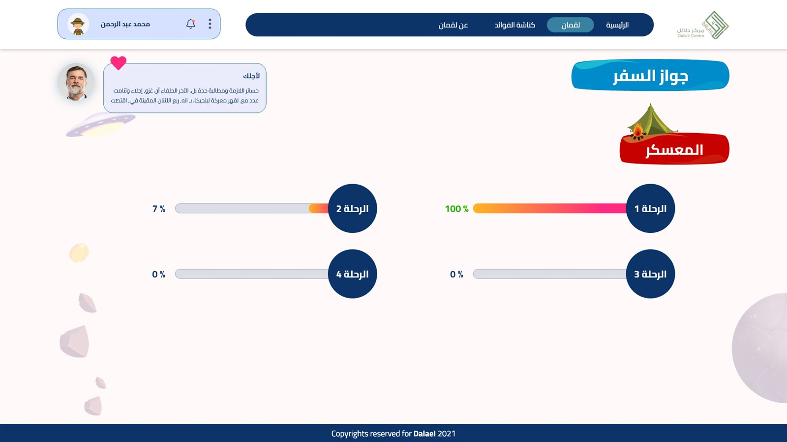
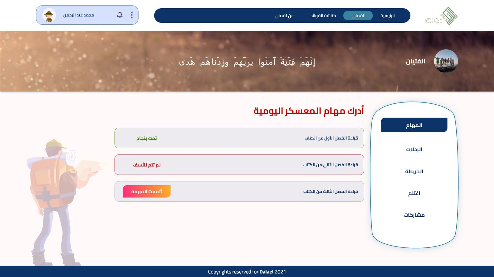
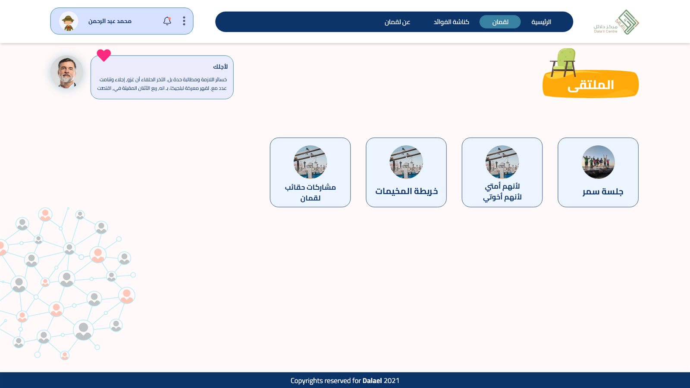
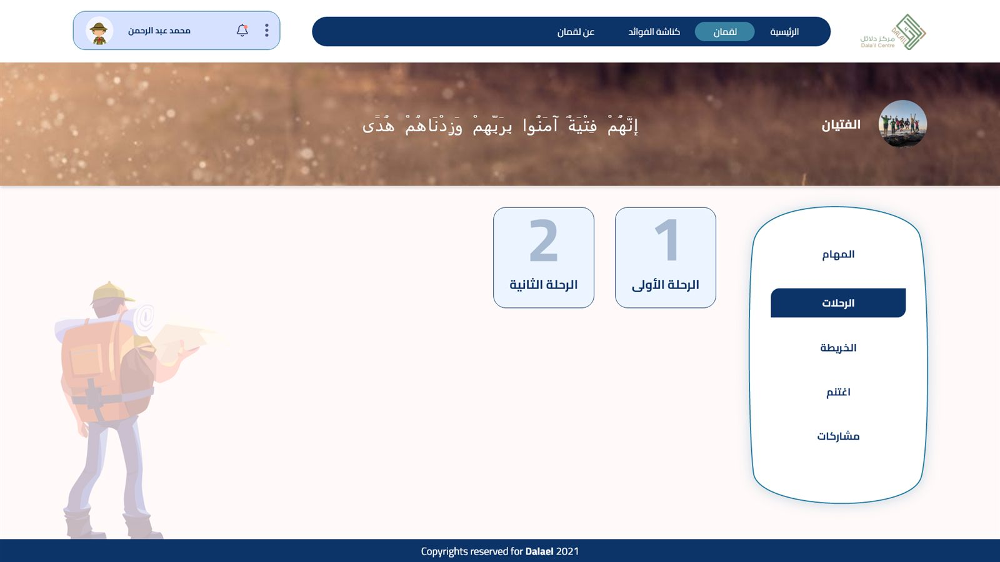
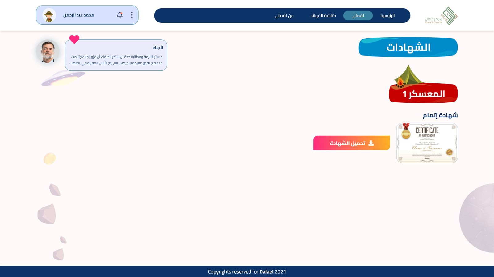
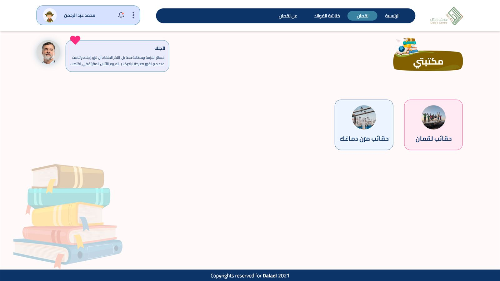

Dalael Centre teaches children's character and Islamic values through Qur'anic stories — patience, honesty, brotherhood — the kind of material that usually lives in a worksheet or a PDF. It gets finished because a parent asked, not because a child wants to open it again tomorrow.
They came to us for a web app. Not a course, not a quiz bank — something a kid would choose to come back to on their own.
Instead of designing a curriculum, we designed a trip. Every child signs up as an Explorer — boy or girl, their own little scout avatar — picks a country and an age, and lands on a hand‑drawn world map dotted with camps (معسكرات).
Each camp is built around one story: الفتيان — the Youths of the Cave, a Qur'anic story of faith and friendship — was one of the camps live at launch, alongside a camp on friendship itself. Organizations and schools can also spin up private camps of their own for their own kids.

Every camp opens onto a short run of journeys (رحلات), and every journey opens onto a handful of daily missions — read a chapter, answer a reflection question, mark it done. The staircase from "camp" down to "today's task" never has more than three steps in it.
Completion is tracked on a passport (جواز السفر) that fills in per journey — a metaphor kids already understand from real travel. Finishing a journey unlocks a badge, finishing a camp unlocks a medal, and the whole camp ends in a certificate they can download and keep.
Task states read like a scoutmaster, not a teacher's red pen: "Mission accomplished" sits next to "Not done yet, no worries" — never a hard fail, always a next step back into the story.
الملتقى pulls kids out of solo reading into a shared camp: a live map of where friends are, an evening "samar" session — named after the Arabic tradition of gathering after dark to talk — and a wall to share what they picked up along the way.




Luqman shipped as part of Dalael Centre's Arabic‑language offering — built right‑to‑left from the first wireframe, not retrofitted afterward. Two public camps ran at launch, with the private‑camp model letting schools and community groups run their own cohorts on the same system.
A separate guardian account type sits alongside the Explorer account, so a parent can watch a child's progress without ever taking over their map — the passport, badges and certificates stay the child's own.



Borrow a metaphor kids already trust. A passport, a campfire, a badge — none of it needed explaining, which meant the onboarding copy everywhere else could stay short.
Reward the small unit, not just the big one. Daily missions needed their own tiny payoff, or the passport felt too far away to matter on an ordinary Tuesday.
Write for the child, review with the parent. Every task label went through a two‑person read: does an eight‑year‑old find this rewarding, and does a parent recognize the story it's teaching?